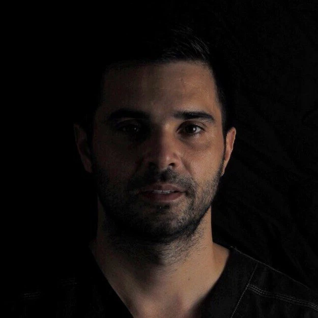
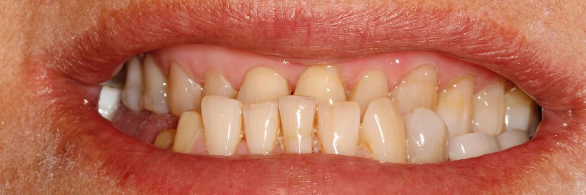
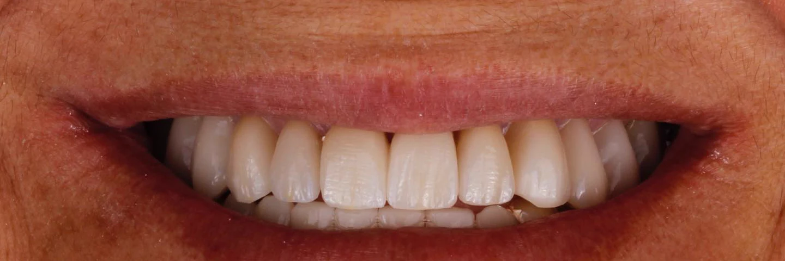
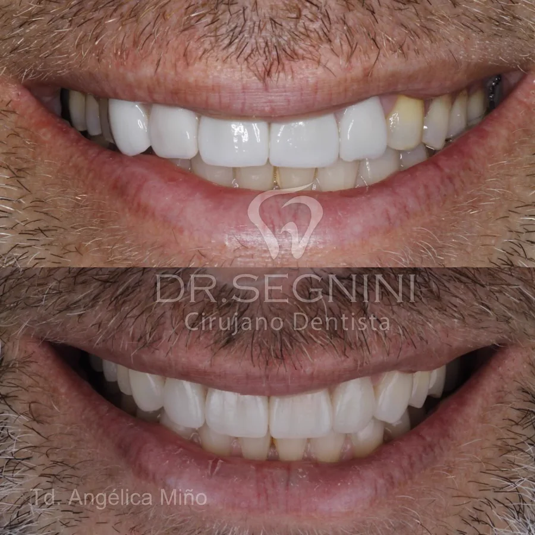

Que se note tu sonrisa, no el trabajo.
Carillas de porcelana, diseño de sonrisa y roncoplastía láser, con resultados naturales. En Momentum Escazú.
Carillas de porcelana
Roncoplastía láser, sin cirugía
Dr. Mario Segnini PoloOdontología estética
Hoy sus pacientes lo encuentran en Instagram. Pero cuando alguien en Escazú busque carillas, diseño de sonrisa o una solución para los ronquidos, la respuesta debería ser su propia web: clara, rápida y con WhatsApp a un toque.
Tiene activado "Reducir movimiento": la portada se muestra quieta.
Instagram lo muestra. Una web hace que lo encuentren.
-
92,6 %
de la población de Costa Rica usa internet. Las redes sociales llegan al 74,5 %: una web le habla también a quien no lo sigue.
DataReportal, «Digital 2025: Costa Rica», enero de 2025.
-
43 %
de quienes buscan dentista en Google elige al que tiene mejores reseñas. Su web reúne sus casos y lo que dicen sus pacientes.
IronMonk, encuesta a 1.500 adultos en EE. UU., agosto de 2019.
-
96 %
de los adultos con celular en Costa Rica usa WhatsApp. Cada botón de su web abre una conversación con el mensaje listo.
CICOM-UCR, «Nuestras apps de cada día 2025».
Lo natural se demuestra.
Así se verían sus casos en la web: grandes, nítidos y comparables. Deslice la línea.


Caso real del Dr. Segnini, publicado en su Instagram.



Tratamientos que realmente hace.
Carillas de porcelana
Color, forma y brillo que no se notan postizos.
ConsultáDiseño de sonrisa
Planificado caso por caso para lograr armonía y función.
ConsultáRoncoplastía láser
Menos ronquidos, sin cirugía.
ConsultáLáser terapéutico
Alivio para bruxismo, aftas y herpes.
ConsultáBlanqueamiento
Con indicaciones claras para que el resultado dure.
ConsultáRehabilitación sobre implantes
Zirconio y porcelana para volver a comer y sonreír con seguridad.
Consultá
¿Roncás? Hay solución sin cirugía.
El láser trabaja de forma controlada sobre los tejidos del paladar, les da firmeza y reduce su vibración durante el sueño. Es mínimamente invasivo y pensado para que vos y quien duerme a tu lado descansen mejor.
Agendá tu valoración
Una clínica nueva, pensada para usted.
«Nos caracterizamos por resultados naturales muy estéticos, sin notar la existencia de un trabajo.»
- FormaciónFellowship en implantes con la Universidad de Miami y Odontópolis. Cursos de estética, oclusión y cerámica.
- EquipoTrabaja con técnicos dentales y especialistas en cada caso.
- UbicaciónMomentum Escazú, cuarto piso, local 39. San Rafael de Escazú.
La dirección de arte en una mirada.
Colores
- BlancoFondo y aire
- Azul hieloFranjas y tarjetas
- Azul profundoTítulos, botón y bandas
- TintaTextos
- Gris azuladoTextos de apoyo
Letras
Que se note tu sonrisa, no el trabajo.
Manrope, gruesa para afirmar y ligera para acompañar. Clara y moderna, se lee perfecto en el celular.
DR. SEGNINI
Cinzel, solo para la marca: son las mayúsculas de su anuncio de Momentum.
Elementos propios
- La burbujaEtiquetas con forma de mensaje: recuerdan que todo termina en una conversación por WhatsApp.
- El retrato en azulLas fotos de personas se tiñen en azul y blanco para que toda la web hable el mismo color.
- Esquinas suavesFotos y tarjetas con esquinas redondeadas: cercano y limpio, como una clínica nueva.
¿Así se siente su marca?
Si esta dirección lo representa, el siguiente paso es construir la web completa con sus casos, tratamientos, la clínica, la ubicación y WhatsApp en cada botón.
Conversemos por WhatsApp